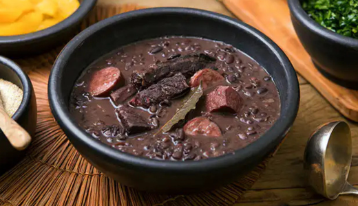

Brasil
Feijoada
Ingredientes:
- Feijão preto
- Carne seca
- Linguiça
- Cebola e alho
- Folha de louro
- Sal
Modo de preparo:
- Dessalgue a carne seca.
- Cozinhe o feijão com louro.
- Refogue alho e cebola e junte as carnes.
- Misture tudo e deixe cozinhar até ficar macio.

Pão de Queijo
Ingredientes:
- Polvilho azedo
- Queijo ralado
- Ovos
- Leite
- Óleo
- Sal
Modo de preparo:
- Ferva leite com óleo e misture ao polvilho.
- Adicione ovos e queijo até virar massa.
- Modele bolinhas.
- Asse até dourar.

Acarajé
Ingredientes:
- Feijão-fradinho sem casca
- Cebola
- Sal
- Óleo de dendê
- Vatapá
- Camarão seco
Modo de preparo:
- Bata o feijão com cebola e sal.
- Modele bolinhos.
- Frite no dendê até dourar.
- Recheie com vatapá e camarão.
Tapioca
Ingredientes:
- Goma de tapioca hidratada
- Queijo ou coco (opcional)
- Recheio doce ou salgado
Modo de preparo:
- Espalhe a goma na frigideira quente.
- Deixe firmar como uma panqueca.
- Adicione o recheio.
- Dobre e sirva quente.
Brigadeiro
Ingredientes:
- Leite condensado
- Chocolate em pó
- Manteiga
- Granulado
Modo de preparo:
- Misture tudo na panela.
- Cozinhe mexendo até desgrudar do fundo.
- Deixe esfriar.
- Enrole e passe no granulado.
VOLTAR